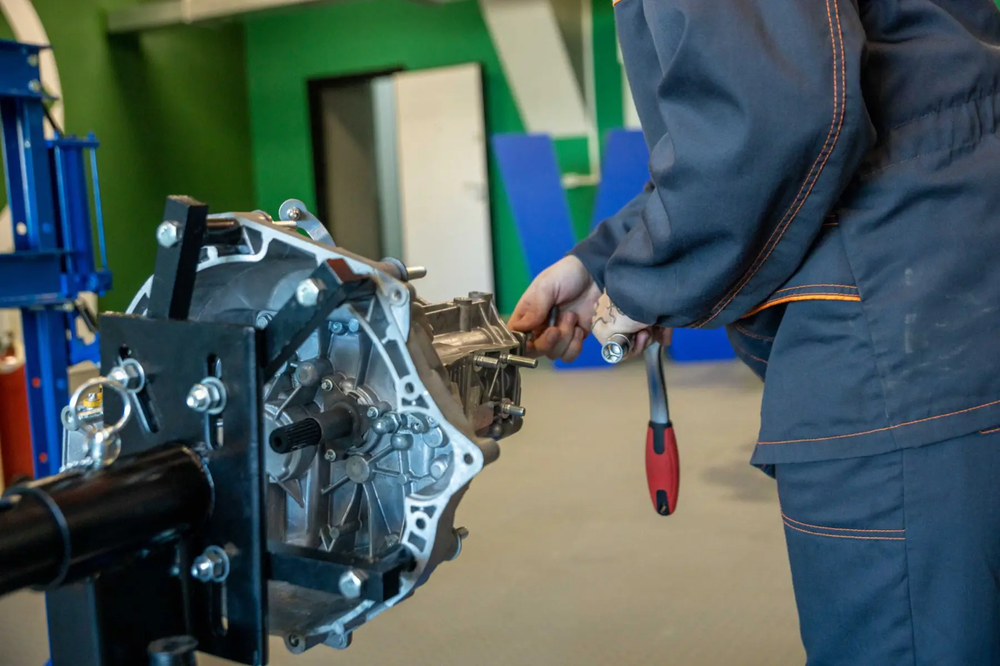
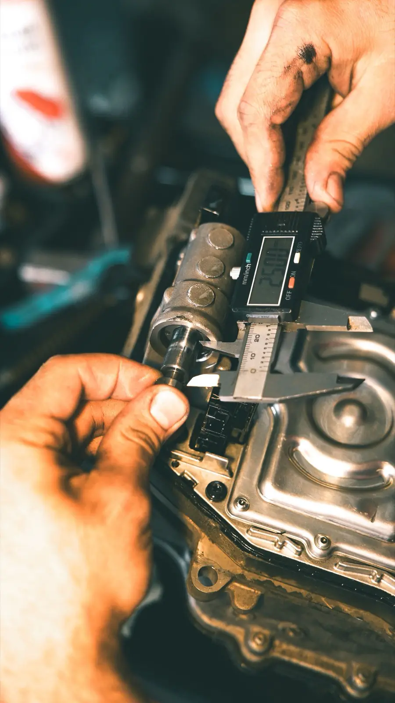

Brakes
Your brakes are the most important part of your car.
- Diagnosis
- Pad replacement
- Rotors
- Drums
- Master cylinders
- Wheel cylinders
- Power boosters
- Emergency brakes
- Hose replacement
- Line replacement
Transmissions are what we're known for. We also do complete auto repair on all makes and models, from the smallest job on a small car to the biggest job on a 3-ton truck.

Most transmission problems start out small and get worse over time. Taking care of it early can go a long way to saving you money. Our transmissions carry a nationwide warranty, and rebuilds are done to ATRA's rebuilding standards.
If it isn't the transmission, bring it anyway. Our Journeyman technicians handle the everyday work on every make and model.

Your brakes are the most important part of your car.
Keeps the engine at its most efficient temperature, and gets it there quickly after starting.
Today's vehicles need an elaborate set of circuits just for everyday driving.
Tank, lines, pump, filter and emission controls, working together.
We're a Hercules tire dealer, and we can also get you any make of tire to suit your needs.
Call and describe what the vehicle is doing. Tell us the make, model and year and when you can bring it in, and we'll set up a time. Weekdays 8 to 5, closed 12 to 1.